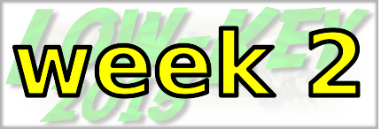

|
 |  |
RSVP for today's climb after the previous week's climb!
| results? | right here! |
| profile |  |
| distance | 8.62 miles (13.9 km) |
| climbing | 2221 ft (676 meters) |
| grade | 4.89% |
| where? | see below |
| when? | 10 Oct 2015 |
| what time | check-in 9:00 to 10:00 climb starts @ 10:10 |
| RSVP | check back later! |
| how? |  |
| how much? | $10 (free for juniors and those with volunteer credit) |
| why? | Ask not why; just do! |
| coordinator | |
| volunteers | sign up! |
| weather | Bay area winds |
| deja-vu? | 1995(3) 1996(2) 2006(6) 2011(3) |
| route map | |
Sorry, folks! Our insurance requires all riders wear helmets during the climb, and we follow the USA Cycling rule against ear buds or other head phones. Rock to tunes before the climb, perhaps, but we need riders to pay attention to what's happening during the climb...
Staging will take place at the Park and Ride at the intersection of Arastradero and Page Mill just west of 280 and Page Mill Road, in Los Altos Hills (Google map).
Post-climb, a very scenic cool down is to turn north (right) on Skyline Boulevard and do the mostly-descent to Hwy 84, descending that into Woodside (Strava route). This will reduce congestion on Page Mill, as well.
From San Jose, you can take the 8 am Caltrain to California Ave then it's an easy ride up Page Mill Road.
From San Francisco, take BART to Millbrae then ride from there -- it's a nice route. Allocate around 2 hours for an unrushed warm-up: Strava route.
Volunteers make Low-Key tick! Without them, we no longer function. Please sign up for any week in the series using our volunteer form! Thanks!!!
Low-Key is all about a group of friends riding up a hill together. It's like any other informal group ride, except we time you to the top and report the results on our web site. But we have no road closures, no lead vehicle, no follow vehicle. We are traffic, sharing the roads with other traffic, following the laws and courtesy which applies to traffic. This includes riding to the right of the road when practicable, and not crossing double yellows to pass riders or to get through corners faster. We're each responsible for our own actions out there, on and off the bike, both as users of the road as as courteous visitors to the neighborhoods we pass through. "Ceci n'est pas un race".